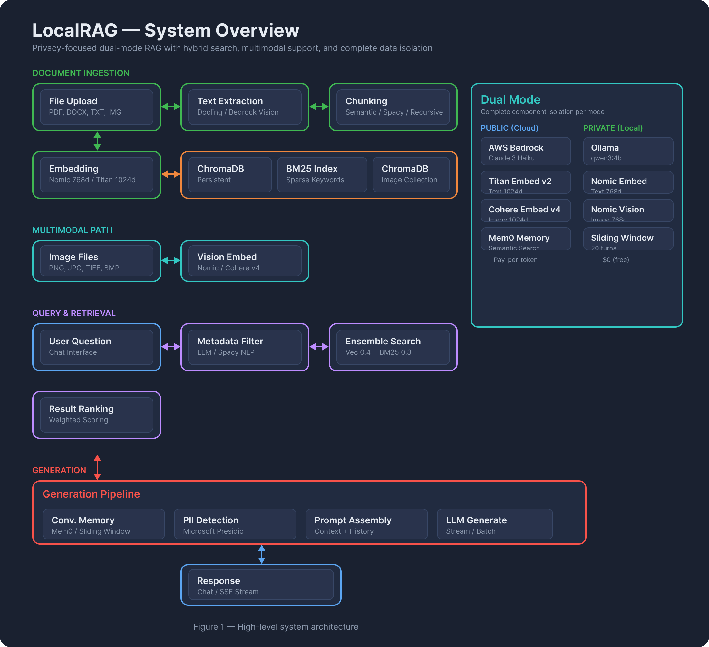
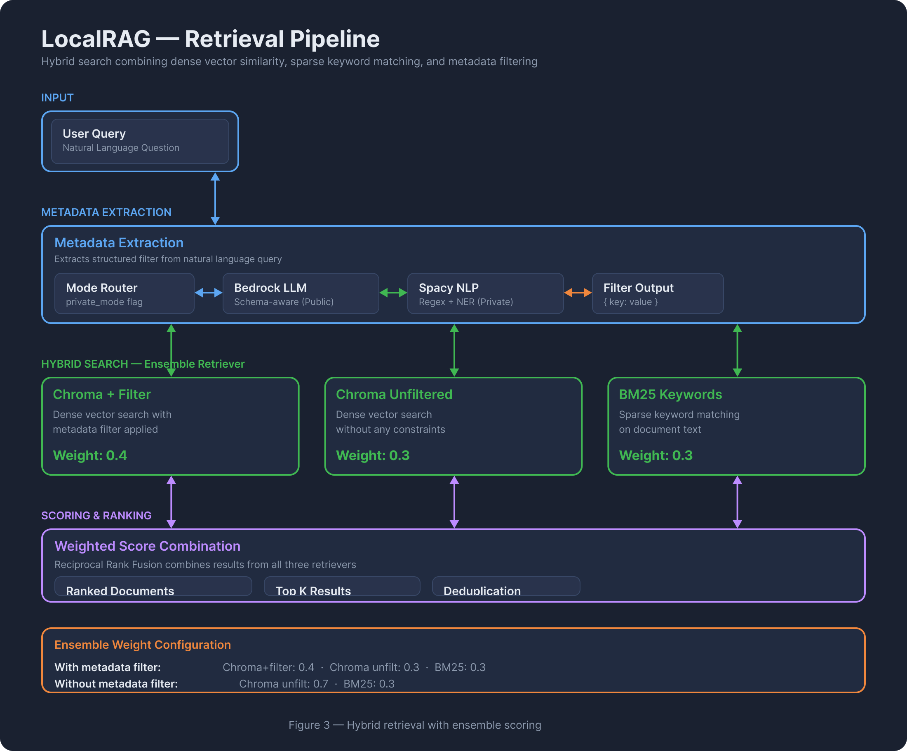
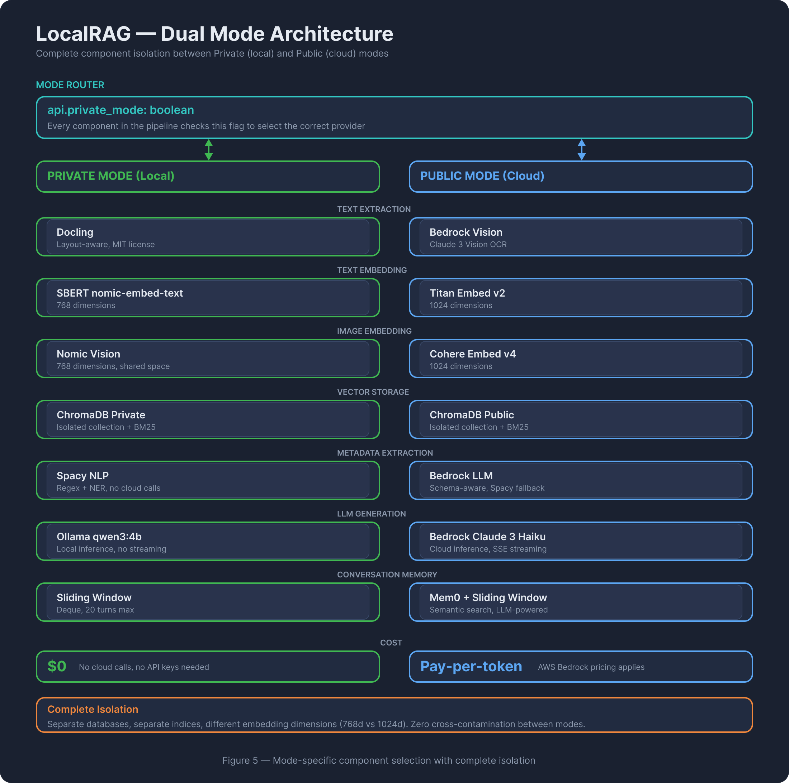

Overview
What VaultRAG does and how it's built
VaultRAG (branded "DocuAssist" in the API) is a production-ready Retrieval-Augmented Generation system with dual-mode operation. Public mode uses AWS Bedrock (Claude 3 Haiku, Titan Embeddings, Cohere Vision) for cloud-powered inference. Private mode runs entirely local with Ollama, ensuring zero data leaves the machine.
Key Highlights
- Dual-Mode — 100% local via Ollama or AWS Bedrock cloud. Switch with a flag.
- Multimodal — Text and images in the same vector space. Cross-modal retrieval.
- Hybrid Retrieval — Vector + BM25 + metadata filtering via weighted ensemble.
- Docling — IBM's layout-aware parser replaces PyPDF2, Tesseract, and python-docx.
- Conversation Memory — Mem0 semantic memory (public) or sliding window (private).
- PII Protection — Microsoft Presidio masks sensitive data before LLM processing.
Built with FastAPI on the backend and Next.js 14 on the frontend, deployed via Docker to AWS EC2 with a GitHub Actions CI/CD pipeline.
Architecture
How the components connect end-to-end
The backend is organized into five module layers: Core (config, caching, prompts, Bedrock client), Data Loading (text extraction, OCR, chunking, indexing), Retrieval (hybrid search, metadata extraction), Generation (LLM generation, memory, PII), and API (FastAPI routes and Pydantic models).

Every component has isolated private and public paths using separate databases, separate indices, and different embedding dimensions (768d local vs 1024d cloud) to prevent cross-contamination. The Bedrock client auto-detects model family (Claude, Llama, Mistral, Titan, Cohere) from the model ID prefix, normalizing request/response formats behind a unified interface.
Data Pipeline
Ingestion, retrieval, and generation flows
Ingestion Pipeline
Upload
PDF, DOCX, TXT
PNG, TIFF, BMP
Extract
Docling (private)
Bedrock Vision (public)
Chunk
Semantic / Spacy
/ Recursive
Embed
SBERT 768d (priv)
Titan 1024d (pub)
Store
ChromaDB
+ BM25 Index
Retrieval Pipeline
Queries go through optional metadata extraction (Bedrock LLM or Spacy NLP) to produce a filter, then hit a three-retriever ensemble:
Chroma + filter:
0.4 ·
Chroma unfiltered: 0.3 ·
BM25 keywords: 0.3Without metadata filter:
Chroma unfiltered:
0.7 ·
BM25 keywords: 0.3

Generation Pipeline
Retrieved context is combined with conversation history (Mem0 semantic search or sliding window) and an output-primed prompt template. The prompt ends with "Answer: The" to force direct responses without preambles.
Dual Mode Architecture
Private (local) vs Public (cloud) — complete isolation
Runs 100% on-device. No cloud calls, no API keys needed. Uses Ollama for LLM inference (qwen3:4b), Docling for document parsing, SBERT nomic-embed-text for 768-dimensional embeddings, Nomic Vision for image embeddings, and a sliding-window memory (deque, 20 turns). Ideal for sensitive or confidential documents where data sovereignty matters.
$0 ·
LLM: Ollama qwen3:4b ·
Embeddings: 768d ·
Vision: qwen2.5vl:3b
Uses AWS Bedrock for all inference. Claude 3 Haiku for generation, Titan Embed v2 for 1024-dimensional text embeddings, Cohere Embed v4 for image embeddings, and Bedrock Vision for OCR. Memory uses Mem0 (semantic, LLM-powered) with sliding-window fallback. Supports streaming responses via SSE.
Pay-per-token ·
LLM: Claude 3 Haiku ·
Embeddings: 1024d ·
Streaming: SSE
| Layer | Private (Local) | Public (AWS) |
|---|---|---|
| LLM | Ollama qwen3:4b | Bedrock Claude 3 Haiku |
| Text Embeddings | SBERT nomic-embed-text (768d) | Bedrock Titan v2 (1024d) |
| Image Embeddings | Nomic Vision (768d) | Cohere Embed v4 (1024d) |
| Text Extraction | Docling (local) | Bedrock Claude 3 Vision |
| Metadata Extraction | Spacy NLP | Bedrock LLM + Spacy fallback |
| Memory | Sliding window (20 turns) | Mem0 + sliding window |
| Vector DB | ChromaDB (private collection) | ChromaDB (public collection) |
| BM25 Index | bm25_index_private.pkl | bm25_index_public.pkl |
| Streaming | Not supported | SSE (Server-Sent Events) |
| Cost | $0 | Pay-per-token |

Components
Module-level details with progressive disclosure
Configuration System Pydantic Settings
core/config.py — Centralized configuration via Pydantic Settings with environment variable override. Single global instance. Mode-specific path isolation prevents cross-contamination between private and public databases.
- AWS credentials (optional for private mode)
- Model IDs for generation, embedding, vision, metadata per mode
- Feature flags:
use_mem0_public,max_conversation_turns,bm25_max_documents - Path getters:
get_chroma_db_path(private),get_bm25_index_path(private)
Caching Layer Global Singletons
core/cache.py — Lazy-loaded global singletons prevent expensive model reloading. Mode-specific caches use dictionaries keyed by {"private": ..., "public": ...}.
- SBERT embeddings (768d), Spacy NLP, BM25 retrievers, metadata schemas
- Custom
NomicVisionEmbeddings: HuggingFace model, L2-normalized CLS token, 768d - Custom
CohereImageEmbeddings: Bedrock Cohere Embed v4, data URI format, 1024d
Bedrock Client Multi-Model Abstraction
core/bedrock_client.py — Auto-detects model family from model ID prefix, normalizes request/response formats. Supports Claude, Llama, Mistral, Titan, and Cohere through a single invoke_text_model() interface.
- Text generation: unified + streaming variants
- Vision:
invoke_vision_model()for image+text input (Claude only) - Model switching requires only changing the model ID string
Prompt Templates Dual-Model Prompts
core/prompts.py — Separate templates for Ollama vs Bedrock. Schema-aware metadata extraction when field names are available. Output priming technique: prompts end with "Answer: The" to force direct responses without preambles like "Based on the documents...".
Text Extraction Docling + Bedrock Vision
data_loading/text_extraction.py — Unified entry point extract_text_unified() routes by mode and file type. Private mode uses Docling (outputs Markdown preserving structure). Public mode uses Bedrock Vision for PDFs/images. Plain text files use direct read in both modes.
Chunking 3 Strategies
data_loading/chunking.py — Three strategies selectable per upload:
- Semantic — LangChain SemanticChunker with mode-specific embeddings, percentile breakpoint (0.7). Best quality, slowest.
- Spacy — Sentence-based splitting into ~3 chunks. Medium speed, good quality.
- Recursive — Character split at 600 chars with 30-char overlap. Fastest, adequate quality.
Indexing & Storage ChromaDB + BM25
data_loading/indexing.py — Stores embeddings in mode-specific ChromaDB collections. Rebuilds BM25 sparse index from full corpus on each upload (skipped if >5000 docs). Auto-extracts metadata schema (unique field names) at zero extra cost. Image indexing uses separate collections with vision embeddings.
Metadata Extraction 3-Tier Fallback
retrieval/metadata_extraction.py — Extracts structured filters from natural language queries. Three-tier fallback: Bedrock LLM (best accuracy, public) → Ollama (private) → Spacy NLP (regex + NER, always works). Returns single key-value pair for ChromaDB filtering.
Hybrid Retriever EnsembleRetriever
retrieval/retriever.py — Combines up to 3 retrievers via LangChain's EnsembleRetriever with configurable weights. Chroma+filter (0.4) catches precise metadata matches, Chroma unfiltered (0.3) provides safety net, BM25 (0.3) handles exact keyword matches. Each retriever returns 15 internal candidates; ensemble re-ranks and returns top-k.
LLM Generation Ollama + Bedrock
generation/generator.py — Routes generation to Ollama (private) or Bedrock (public). Integrates conversation memory, supports both text and vision generation, and provides streaming via SSE for public mode. Vision generation uses the first retrieved image with base64 encoding.
Memory System Mem0 + Sliding Window
generation/memory.py — Private mode uses a simple in-memory deque per session (last 20 turns). Public mode uses Mem0 for semantic memory search (finds relevant memories by meaning, not just recency) with sliding window as resilient fallback. Public always writes to both stores. Mem0 initialization failures are non-fatal.
PII Protection Presidio
generation/pii.py — Reversible PII masking via Microsoft Presidio. Detects PERSON, SSN, EMAIL, PHONE, CREDIT_CARD, etc. Replaces with unique placeholders (<PERSON_1>). Currently implemented but not integrated into the API flow — ready for activation via a per-request flag.
Technology Stack
Languages, frameworks, and infrastructure
Backend
FastAPI 0.115, Python 3.11+, Pydantic, uvicorn
Frontend
Next.js 14, React 18, TypeScript, Tailwind CSS, react-markdown
Vector Search
ChromaDB 0.5.7, BM25 (rank-bm25), LangChain EnsembleRetriever
LLM Providers
AWS Bedrock (Claude, Llama, Titan, Cohere, Mistral), Ollama
Document Processing
Docling 2.66+, PyMuPDF, Pillow, Spacy 3.8+
Embeddings
nomic-embed-text (768d), Titan v2 (1024d), Nomic Vision, Cohere v4
Memory & PII
Mem0, Presidio Analyzer + Anonymizer, sentence-transformers
Infrastructure
Docker Compose, GitHub Actions, AWS ECR + EC2, Redis (optional)
Infrastructure
Deployment pipeline and production architecture
Deployment Flow
Push
Git push to
master/main
Build
GitHub Actions
Docker images
Push
Images to
AWS ECR
Deploy
SSH to EC2
Pull & run
Live
Backend: 8000
Frontend: 3000
Production Setup
t3.small (2GB RAM minimum) ·
Storage: 20GB gp3 EBS ·
Region: us-east-1Data persists on host-mounted volume:
/home/ec2-user/docuassist-dataMulti-stage Dockerfile runs as non-root
appuser for security.
Docker Compose orchestrates backend + frontend + optional Redis. The backend Dockerfile uses multi-stage build: Stage 1 installs dependencies and downloads Spacy models, Stage 2 copies only production artifacts for a smaller final image. Frontend receives the API URL as a build argument for environment-specific deployment.
Testing
7 pytest tests covering health, upload, retrieve, chat, and generate endpoints across both modes. Public-mode tests auto-skip without AWS credentials. Quick test script supports --mode private|public|both for manual smoke testing.
Documentation
Detailed analysis files and architecture diagrams
Analysis Documents
Architecture Overview
Executive summary, module map, API endpoints, deployment architecture, file layout.
View document →Backend Pipeline
Deep dive into all 15 backend modules: config through PII protection, with complete data flows.
View document →Frontend Analysis
Component architecture, streaming SSE, state management, Gradio vs Next.js comparison.
View document →Dual-Mode & Infrastructure
Mode switching, Docker orchestration, CI/CD pipeline, AWS architecture, cost analysis.
View document →Architecture Diagrams
System Overview
High-level: Ingestion, Multimodal, Retrieval, Generation, and Dual Mode flows.
Retrieval Pipeline
Query through metadata extraction to weighted ensemble hybrid search.
Dual Mode Architecture
Complete component isolation between Private and Public paths.